സാമൂഹ്്യശാസ്ത്രം
ഭാഗം 2
സ്റ്റാൻഡേർഡ് V
കേരളസർക്ാർ
പൊൊതുവിദ്്യാഭ്്യാസവകുപ്പ്
തയ്ാറാക്ിയത്്
സംംസ്ാന വിദ്്യാഭ്്യാസ ഗവേഷണ പരിശീലന സമിതി (SCERT) കേരളംം
2024
Page 1
Page 2
ജനഗണമന അധിനായക ജയഹേ
ഭാരത ഭാഗ്യവിധാതാ,
പഞ്ാബസിന്ധു ഗുുജറാത്ത മറാഠാ
ദ്ാവിഡ ഉത്ക്ക
ല ബംഗാ,
വിന്ധധ്യഹിമാചല യമുുനാഗംഗാ,
ഉച്ഛല ജലധിതരംഗാ,
തവശുുഭനാമേ ജാഗേ,
തവശുുഭ ആശിഷ മാഗേ,
ഗാഹേ തവ ജയ ഗാഥാ
ജനഗണമംഗലദായക ജയഹേ
ഭാരത ഭാഗ്യവിധാതാ
ജയഹേ, ജയഹേ, ജയഹേ,
ജയ ജയ ജയ ജയഹേ!
Prepared by
State Council of Educational Research and Training (SCERT) Kerala
Poojappura, Thiruvananthapuram 695012, Kerala
Website : www.scertkerala.gov.in, e-mail : scertkerala@gmail.com
Typeset and design by : SCERT
First edition: 2024
Printed at : KBPS, Kakkanad, Kochi-30
© Department of General Education, Government of Kerala
സാമൂഹ്്യശാസ്ത്രം
5
പ്രതിജ്ഞ
ഇന്ത്യ എന്റെ രാജ്യമാണ്. എല്ാ ഇന്തത്യക്കാ്കാരുും എന്റെ
സഹോ�ോദരീ സഹോ�ോദരന്ാരാണ്.
ഞാൻ എന്റെ രാജ്യത്തെ സ്നേഹിക്കുുന്നുു; സമ്പൂർണ്ണവുും
വൈവിധ്യപൂൂർണ്ണവുുമായ അതിന്റെ പാരമ്പര്യത്തിൽ
ഞാൻ അഭിമാനം കൊ�ൊള്ളുുന്നുു.
ഞാൻ എന്റെ മാതാപിതാക്കളെയുും ഗുുരുക്ക്കന്മാരെയുും
മുുതിർന്നവരെയുും ബഹുുമാനിക്്കുുംും.
ഞാൻ എന്റെ രാജ്യത്തിന്റെയുും എന്റെ
നാട്ടുുകാരുടെയുും ക്ഷേമത്തിനുും ഐശ്വര്യത്തിനുും
വേണ്ി പ്രയത്നിക്്കുുംും.
ദേശീയഗാനംം
Page 3
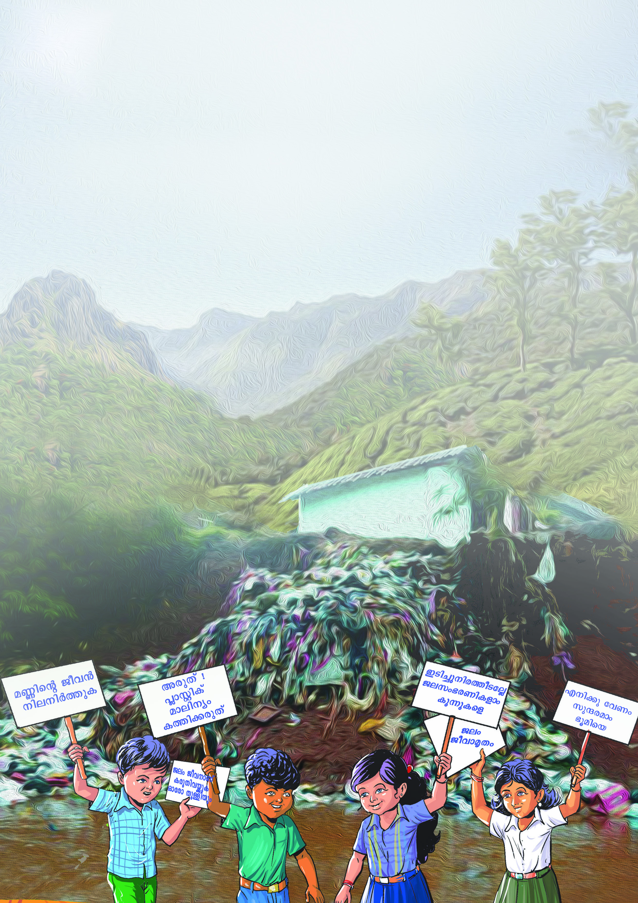
പ്രിിയപ്പെƀട്ട കൂൂട്ടുകാരേ,
അഞ്ചാംം ക്ലാാസിിലെെ സാമൂൂഹ്യയശാാസ്ത്രംം പാാഠപുസ്തകം രണ്ടാംം ഭാാഗമാണിിത്്.
ഗതാഗത - ആശയവിിനിിമയ സംവിിധാാനങ്ങളുുടെെ ഉത്ഭവം, വിികാസം
എന്നിിവയെ�ക്കുുറിിച്ച്് ചരിത്രപരമാായി മനസ്സിിലാക്കുുന്നതിിനുംം�
വർത്തമാനകാാലത്തിന്റെെź ഗതിവിിഗതികൾ നിിർണ്ണയിക്കുുന്നതിിൽ
ഇവയുുടെെ സ്ഥാാനം വിിശദീീകരിിക്കുുന്നതിിനുംം� ഗതാഗത - ‘ആശയവിിനിിമയ
സംവിിധാാനങ്ങൾ’ എന്ന പാാഠം പര്യാ�ാപ്തമാണ്. ‘നാടറിിയാം’ എന്ന പാാഠം
കേ�രളത്തിിന്റെെź ഭൂപ്രകൃതി, ഭൂമിശാാസ്ത്ര സവിിശേ�ഷതകൾ, പ്രകൃതിവിിഭവങ്ങൾ
സംരക്ഷിിക്കേ�ണ്ടതിിന്റെെź പ്രാധാാന്യംം� എന്നിിവയെ�ക്കുുറിിച്ച്് പ്രതിിപാാദിക്കുുന്നു.
സാമൂൂഹിക - സാമ്പത്തിക അസമത്വവത്തിൽ നിിന്ന് സമത്വവത്തിലേേക്കുുള്ള
നമ്മുുടെെ സമൂൂഹത്തിന്റെെź പരിിവർത്തനത്തെ�
ക്കുുറിിച്ച്് പ്രാഥമിക ധാാരണ
ലഭിിക്കുുന്നതിിന് ‘തുല്യതയിിലേേക്ക് ’ എന്ന പാാഠം സഹാ
ായിക്കുംം�. ആകാശ
വിിസ്മയങ്ങളും�ം ഭൗമപ്രതിിഭാാസങ്ങളുുമാണ് ‘വിിണ്ണിലെെ വിിസ്മയങ്ങളും�ം-
മണ്ണിലെെ വിിശേ�ഷങ്ങളും�ം’ എന്ന പാാഠത്തിൽ പ്രതിിപാാദിക്കുുന്നത്്.
‘നിിയമവുംം� സമൂൂഹവുംം�’ എന്ന പാാഠം സാമൂൂഹികജീീവിിതത്തിൽ നിിയമങ്ങൾ
പാാലിക്കേ�ണ്ടതിിന്റെെź അനിിവാര്യതയിിലേേക്ക് വിിരൽ ചൂണ്ടുന്നു. സമൂൂഹത്തെ�
ആഴത്തിൽ മനസ്സിിലാക്കാനുംം� മാനവിികമൂൂല്യങ്ങൾ ഉൾക്കൊ�ൊള്ളുുന്നതിിനുംം�
ഈ പുസ്തകം ഉപയുുക്തമാകുമെെന്ന്് ഉറപ്പുണ്ട്.
ഡോോ. ജയപ്രകാശ്്് ആര്. കെ�.
ഡോോ. ജയപ്രകാശ്്് ആര്. കെ�.
ഡയറക്ടര്
ഡയറക്ടര്
എസ്്്.സി.ഇ.ആര്.ടിി.
എസ്്്.സി.ഇ.ആര്.ടിി.
Page 4

സംസ്ഥാാന വിദ്്യയാാഭ്്യയാാസ ഗവേഷണ പരിശീലന സമിതി (SCERT)
വിദ്്യയാഭവന്, പൂജപ്പുര, തിരുുവനന്തപുുരം 695 012
അക്കാദമിക്് കോ�ോർഡിനേറ്റർ
ഡോോ. അഞ്ജന വി. ആർ. ചന്ദ്രൻ
റിസർച്് ഓഫീസർ, എസ്.സി.ഇ.ആര്.ടി.
പാഠപുുസ്തകരചനാസമിതി
പാഠപുുസ്തകരചനാസമിതി
അഡ്്വൈസർ
ഡോ�ോ. കെ.എൻ. ഗണേഷ്
ചെയർമാൻ
കേരള കൗൺസിൽ ഫോോർ
ഹിസ്റ്റോറി്കൽ റിസർച്ച്്
അംംഗങ്ങൾ
ഡോ�ോ. നന്ദകുുമാർ ബി. വി.
അസിസ്റ്റന്റ്് പ്്രരൊഫസർ
ഡിപ്ാർട്്ട്മമെന്റ്് ഓഫ്് ഹിസ്റ്റി
ശ്ീ നാരായണ കോ�ോളേജ്,
വർ്കല
ചെയർപേഴ്്സൺ
ഡോ�ോ. അഭിലാഷ് കുുമാർ കെ.ജി
അസിസ്റ്റന്റ്്. പ്്രരൊഫസർ
ഡിപ്ാർട്്ട്മമെന്റ്് ഓഫ്് പൊ�ൊളിറ്റിക്ക്കൽ സയൻസ്,
ബി.ജെ.എം. ഗവ. കോ�ോളേജ്, ചവറ
വിദഗ്്ധർ
ഡോ�ോ. സുരേഷ് ബാബുു ജി.എസ്.
പ്്രരൊഫസർ. ഇൻ സോ�ോഷ്യോളജി ഓഫ്് എജ്യയൂക്കേഷൻ,
സാ്കീർ ഹുസൈ
ൻ സെന്റർ ഫോോർ എജ്യയൂക്കേഷണൽ
സ്റ്റഡീസ്
ജവഹർലാൽ നെഹ്്
റുു യൂൂണിവേഴ്സിറ്ി, ന്യയൂൂ ഡൽഹി
അച്യുതൻകുട്ി കെ.
യുു.പി.എസ്.ടി (റിട്ട.)
എ.യുു.പി.സ്കൂൂൾ ഇരുമ്പളശ്ശേരി,
പാലക്കാട്്
പവിത്രൻ സി.കെ.
എച്ച്്.എസ്.ടി (റിട്ട.)
ജി.എച്ച്്.എസ്.എസ്.,
കണിയാംപറ്റ, വയനാട്്
നിഷ എംം.എസ്്.
യുു.പി.എസ്.ടി
പി.എച്ച്്.എസ്.എസ്.
മെഴുവേലി
പത്തനംതിട്ട
വേണുഗോ�ോപാലൻ കെ.
ബി.പി.സി (റിട്ട.)
പട്ാമ്ി, പാലക്കാട്്
സന്ത
തോഷ്് വെളിയന്ൂർ
ചിത്രകാരൻ, കോ�ോട്ടയം
ബീന റ്റി. ചാണ്ടപ്ിള്ള
യുു.പി.എസ്.ടി.
ഗവ.യുു.പി.എസ്., കോ�ോഴഞ്ചേരി,
പത്തനംതിട്ട
പുഷ്്പാാംംഗദൻ യു.
യുു.പി.എസ്.ടി
ജി.എച്ച്്.എസ്.എസ്. അഞ്ചൽ,
പുുനലൂർ, കൊ�ൊല്ം (വെസ്റ്റ്്)
രാധാകൃഷ്ണൻ പി.
ഹെ
ഡ്മാസ്റ്റർ (റിട്ട.)
ജി.എൽ.പി. സ്കൂൂൾ ആലൂൂർ,
പാലക്കാട്്
അനസ്് എൻ. എസ്്.
ഗവേഷക വിദ്യാർഥി
എൻ.എസ്.എസ്.കോ�ോളേജ്,
നിലമേൽ, കൊ�ൊല്ം
വിഷ്ണു പി.എസ്്.
ചിത്രകാരൻ, നേമം,
തിരുുവനന്തപുുരം
ബിനോ�ോയ്് വി.
പ്രിൻസിപ്ാൾ
ജി.എച്ച്്.എസ്.എസ്, പയ്ാമ്പ്ര,
കോ�ോഴിക്ക
കോട്്
മാർഗരറ്റ്് ലിനി വി.പി.
എച്ച്്.എസ്.ടി.
ഗവ. വി & എച്ച്്.എസ്.എസ്.,
വെള്ളനാട്്, തിരുുവനന്തപുുരം
വത്സലകുമാരി കെ.ആർ.
എച്ച്്.എസ്.ടി. (റിട്ട.)
പി.ബി .എം.എച്ച്്.എസ്.എസ്.,
കൊ�ൊടുുങ്ങല്ലൂൂർ, തൃശൂൂർ
ബീന എസ്്. നായർ
യുു.പി.എസ്.ടി.
ജി.ജി.എച്ച്്.എസ്.എസ്.
മലയിൻകീഴ്
നികേതൻ എംം.
വിദ്യാർഥി (+1), ജി .എച്ച്്.എസ്.
എസ്. മെഡി്കൽ കോ�ോളേജ്
ക്യയാമ്പസ്, കോ�ോഴിക്ക
കോട്്
Page 5


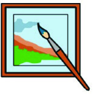


പ്രവർത്തനം
ചർച്ചെയ്്യാാംാം / അഭിമുുഖം
ചിത്രശേഖരണം
ചോ�ോദ്്യം
നിർമ്ിക്്കാാംാം
വാായിക്്കാാംാം
തുുടർ വാായന
(വിലയിരുത്തലിന് വിധേയമാക്കേണ്ടതില്ല)
കൊsൊളാാഷ്
തുുടർപ്രവർത്തനങ്ങൾ
നിറം നൽകാാം
പാാട്് പാാടാാം
കളിക്്കാാംാം
എഴുുതാാം
വരയ്കക്കകാംാം
റോ�ോൾപ്ലേ / മൈം
പ്ലക്കാാർഡ് നിർമ്മാാണം
ഐ.സി.ടി
7. ഗതാഗത - ആശയവിനിമയ സംംവിധാനങ്ങൾ
7. ഗതാഗത - ആശയവിനിമയ സംംവിധാനങ്ങൾ . . .
. . . 111 - 132
111 - 132
8. നാടറിയാംം
8. നാടറിയാംം . . . . . . . . . . . . . . . . . . . . . . . . . . . .
. . . . . . . . . . . . . . . . . . . . . . . . . . . .133 - 148
133 - 148
9. തുല്യതയിലേക്ക്്
9. തുല്യതയിലേക്ക്് . . . . . . . . . . . . . . . . . . . . . .
. . . . . . . . . . . . . . . . . . . . . . 149 - 160
149 - 160
10. വിണ്ണിലെ വിസ്്മയങ്ങളുംം മണ്ണിലെ
10. വിണ്ണിലെ വിസ്്മയങ്ങളുംം മണ്ണിലെ
വിശേഷങ്ങളുംം
വിശേഷങ്ങളുംം . . . . . . . . . . . . . . . . . . . . . . . .
. . . . . . . . . . . . . . . . . . . . . . . . 161 - 178
161 - 178
11. നിയമവുംം സമൂഹവുംം
11. നിയമവുംം സമൂഹവുംം . . . . . . . . . . . . . . . . . .
. . . . . . . . . . . . . . . . . . 179 - 189
179 - 189
ഉള്ളടക്കംം
ഉള്ളടക്കംം
ഈ പുസ്തകത്ിൽ പഠനസൗകര്യത്ിനായി
ചില ചിഹ്നങ്ങൾ ഉപയോ�ോഗിച്ിരിക്ുന്ു.
Page 6


Page 7


111
ഗതാഗത - ആശയവിനിമയസംവിധാനങ്ങൾ
7
വാർത്താകൊ�ൊള
ാഷ് ശ്രദ്ധിക്കൂൂ.
തിരുുവനന്തപുുരത്ത് നിന്ന്് എത്രയുും പെട്ടെന്ന്് ഹൃദയം കൊ�ൊച്ിയിൽ എത്തിക്കാ്കാൻ
കഴിഞ്ഞത് എങ്ങനെ
?
•
•
തീരദേശവാസികൾക്ക്ക
്ക് ജാഗ്രതാനിർദേശം നൽകിയത് എങ്ങനെയെ
ല്ാമായിരിക്്കുുംും?
•
•
പ്രളയദുുരിതാശ്വാസ പ്രവർത്തനങ്ങളുടെ ഏകോ�ോപനം പെട്ടെന്ന്് സാധ്യമായതെങ്ങനെ
?
ഈ സന്ദർഭങ്ങളെല്ാം നിത്യജീവിതത്തിലെ
ഗതാഗത-ആശയവിനിമയ സംവിധാന
ങ്ങളുടെ പ്രസക്ി വ്യക്തമാക്കുുന്നുു.
ഗതാഗത-ആശയവിനിമയ സംവിധാനങ്ങൾ മനുഷ്്യർക്കിടയിലുളള ഭൗതിക അകലം
മറികടക്കുന്നതിനുളള മാർഗങ്ങളാണ്. മനുഷ്്യർ തമ്ിലുളള അകലം കണക്കിലെടുത്ത്്
പരസ്പരം ബന്ിപ്പിക്കുന്ന ഫലപ്രദമായ സംവിധാനമാണിത്. ജനങ്ങളെയോ�ോ
ചരക്കുുകളെയോ�ോ ഒരുു സ്ഥലത്തുുനിന്ന്് മറ്്ററൊരുു സ്ഥലത്തേക്ക്ക
്ക് കൊണ്ടുപോകുന്നതിന്
ഗതാഗതം സഹായകമാകുുന്നുു. ആശയവിനിമയത്തിൽ ഒരുു ഉറവിടത്തിത്തിൽ നിന്ന്്
ആശയങ്ങളോ�ോ സന്ദേശങ്ങളോ�ോ മറ്റൊരിടത്തേക്ക്ക
്ക് കൈമാറുുന്നുു.
പ്രളയ ദുരിതാശ്്വവാസ ഏകോ�ോപനത്ിന്്
ജില്ലാകളക്ടർമാരുമായി മുഖ്്യമന്തിയുടെ
അടിയ്തര വീഡിയോ�ോ കോ�ോൺഫറൻസ്്
ഹൃദയശസ്ത്രക്ിയക്ായി
കൊ�ൊട്ാരക്കര
സ്്വദേശിയുടെ ഹൃദയംം എയർ ആംംബുലൻസിൽ
തിരുവനന്തപുരത്ുനിന്ന്് കൊ�ൊച്ിയിലെത്ിച്ു
ഇന്ത
തോനേഷ്യയിൽ ഭൂചലനംം;
സുനാമിക്്കുുംം സാധ്യത: തീരദേശ
വാസികൾക്ക്് ജാഗ്രതാനിർദേശംം
ഗതാഗത - ആശയവിനിമയ
സംംവിിധാനങ്ങൾ
Page 8
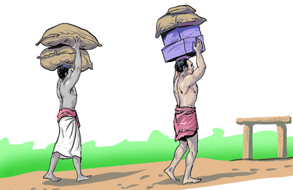


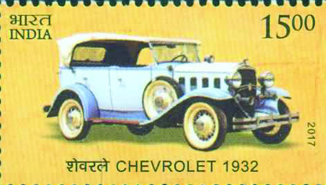

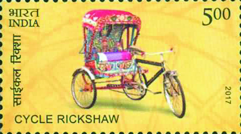

112
സാമൂഹ്്യശാസ്ത്രം ക്ാസ് V
നീനുുവിന്റെ തപാൽ സ്റ്റാമ്പ്് ആൽബത്തിലെ
ഒരുു പേജാണ് മുുകളിൽ നൽകി
യിരിക്കുന്നത്. വിവിധ കാലഘട്ടങ്ങളിലെ ഗതാഗത വികാസത്തെക്കുുറിച്ച്്
ഇന്ത്യൻ തപാൽവകുുപ്പ്് പുുറത്തിറ്കിയ സ്റ്റാമ്പുുകളാണിവ. സ്റ്റാമ്പുുകളിൽ കാണുന്ന
വാഹനങ്ങൾ ഏതൊ�ൊക്കെയെന്ന്് കണ്ടെത്തൂൂ.
സ്റ്റാമ്പുുകളിൽ കാണുന്ന വാഹനങ്ങൾ ഇന്ന്്
നമ്മുടെ നാട്ിൽ പ്രചാരത്തിലുള്ളവയാണോ�ോ?
വാഹനങ്ങൾ ഉപയോ�ോഗിക്കുന്ന ഏക ജീവിവർഗം
മനുഷ്്യരാണെ
ന്ന്് നിങ്ങൾ്കറിയാമല്്ലലോ.
പണ്ടുുകാലത്ത് വാഹനങ്ങൾക്ക്ക
്ക് പകരമായി
ഉപയോ�ോഗിച്ിരുന്നത് ആന, കുുതിര, കാള,
ഒട്ടകം തുടങ്ങിങ്ങിയ മൃഗങ്ങളെയായിരുുന്നുു.
എന്തെല്ാം ആവശ്യങ്ങൾ്കാണ് മനുഷ്്യർ
ഇന്ന്് വാഹനങ്ങൾ ഉപയോ�ോഗിക്കുന്നത്?
• സഞ്ചാരത്തിന്്്
• ചരക്കുുുകൾ ഒരിടത്ത്്് നിന്നുംം� മറ്റൊ�ൊരിടത്തേ�ക്ക്്് കൊ�ൊണ്ടുുപോ�ോകുുന്നതിന്്്
•
•
വാഹനങ്ങളുടെ കണ്ടുുപിടിത്തത്തിന് മുുമ്പ്് ഈ ആവശ്യങ്ങൾ എങ്ങനെ ആയിരിക്്കാാംാം
നിറവേറ്ിയിട്ടുുണ്ാവുുക?
ഗതാഗതംം
വാഹനംം
‘വഹിച്ചുകൊ�ൊണ്ടുപോോകുന്ന
ഉപകരണംംം’ എന്നാണ്്് വാഹനംംം
എന്ന പദത്തിന്റെź അർഥംംം.
മനുഷ്യർ സഞ്ാരത്ിനായുംം ചരക്കുകൾ
കൊ�ൊണ്ടുപോോകുന്നതിനായുംം ഉപയോ�ോഗി
ക്കുന്ന യാന്ത്രിക - യാന്തികേതര സംംവിധാന
ങ്ങളാണ്് വാഹനങ്ങൾ.
• കാൽനടയായി തലച്ചുുുമടായി മൃഗങ്ങളുുടെെ പുുുറത്ത്്്
Page 9
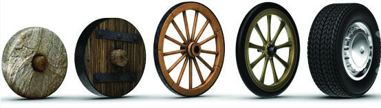

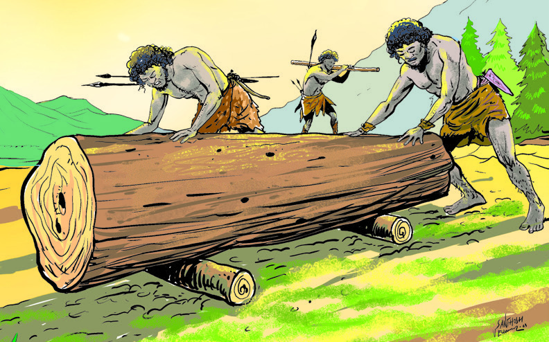


113
ഗതാഗത - ആശയവിനിമയസംവിധാനങ്ങൾ
ഇത്തരം മാർഗങ്ങൾക്ക്ക
്ക് എന്തെല്ാം പരിമിതികൾ ഉണ്ായിരുുന്നുു?
• വർധിച്ചുുുവരുുന്ന ആവശ്യയങ്ങൾ നിറവേ�റ്റാൻ കഴിഞ്ഞിരുുന്നില്ല.
•
•
മുുകളിൽ സൂൂചിപ്പിച്ച പരിമിതികൾ മറികടക്കാ്കാനാണ് മനുഷ്്യർ വാഹനങ്ങൾ
വികസിപ്പിച്ചെടുുത്തത്. ചക്രങ്ങളുടെ കണ്ടുുപിടിത്തമാണ് ഗതാഗതരംഗത്തെ മാറ്റങ്ങൾക്ക്ക
്ക്
അടിസ്ഥാനമായത്.
ചക്രത്ിൽനിന്ന്് വാഹനത്തിലേക്ക്്
മനുഷ്്യരുടെ ജീവിതത്തെ മാറ്ിമറിച്ച ചക്രത്തിന്റെ കണ്ടുുപിടിത്തം ഒരൊ�ൊറ്റ ദിവസം
കൊ�ൊണ്ട്് സംഭവിച്ചതല്ല. ഉരുളൻ മരത്തടിക്ക്ക
്ക് മുുകളിൽ സാധനങ്ങൾ വച്ച്് ഉരുുട്ിയാൽ
ഭാരനീ്കം എളുപ്പമാകുും എന്ന്് മനസ്ിലാ്കിയ മനുഷ്്യർ ഉരുളുു
കളെ ചെറുുതാ്കി
ചെറുുതാ്കി ചക്രങ്ങളാ്കി.
1976 ൽ സ്വിി�റ്റ്്്സർലൻഡിലെ� സൂറിച്ച്്്
തടാകത്തിന്റെź തീരത്തുനിന്ന്്് കണ്ടെ�ത്തിയ,
ഏകദേ�ശംംം 4500ൽ അധികംംം വർഷംംം
പഴക്കമുള്ള ചക്രത്തിന്റെź ഭാഗങ്ങളാണ്്്
ചിത്രത്തിൽ കാണുന്നത്്്. മേ�പ്പിൾ മരപ്പലകകൾ കൊ�ൊണ്ട്്്
നിർമ്മിിച്ച ഈ ചക്രത്തിന്റെź ഭാഗംംം സ്വിി�സ്്് നാഷണൽ
മ്യൂ�ൂസിയത്തിൽ സൂക്ഷിിച്ചിരിക്കുന്നു.
Page 10

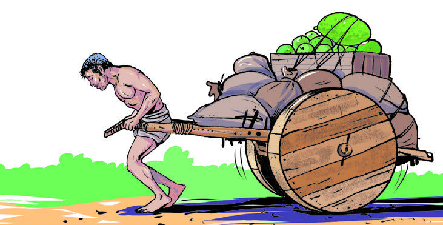


114
സാമൂഹ്്യശാസ്ത്രം ക്ാസ് V
മെസോ�ോപ്്പപൊട്ടേമിയ
ഏകദേ�ശംംം 5000 വർഷങ്ങൾക്കു മുമ്പ്്് മെെസോ�ോപ്പൊ�ൊട്ടേ�മിയക്കാർ ചക്രങ്ങൾ
നിർമ്മിിച്ചിരുന്നതായി കരുതപ്പെ�ടുന്നു. അവരുടെെ ചക്രങ്ങൾ കട്ടിയുള്ള
മൂന്നുകഷണംംം പലകകൾ ചേ�ർത്തുവച്ച്്് തോ�ോൽപ്പട്ടയിൽ ചെ�മ്പാാണി തറച്ച തരത്തിൽ
ആയിരുന്നു. പിന്നീട്്് ഈജിപ്്റ്റുകാരും�ംം റോ�ോമാക്കാരും�ംം ചക്രങ്ങളെ� കൂടുതൽ മെെച്ചപ്പെ�ടുത്തി.
ഇന്നത്തെ� ഇറാഖ്്് ഉൾപ്പെ�ടുന്ന പ്രദേ�ശത്താണ്്് മെെസോ�ോപ്പൊ�ൊട്ടേ�മിയൻ സംംംസ്കാാരംംം വളർന്ന്്്
വന്നത്്. യൂഫ്രട്ീസ്്, ടൈഗ്രീഗ്രീസ്് എന്ീ നദികൾക്കിടയിലാണ്് ഈ പ്രദേശംം. 'രണ്ടു
നദികൾക്കിടയിലുള്ള പ്രദേശംം’ എന്ാണ്് 'മെസോ�ോപ്്പപൊട്ടേമിയ' എന്ന വാക്ിനർഥം.
ചിത്രങ്ങൾ ശ്രദ്ധിക്കൂൂ.
ചക്രങ്ങൾ മുുൻകാലങ്ങളിൽ ഗതാഗതത്തിന് എങ്ങനെയെ
ല്ാം ഉപയോ�ോഗിച്ചുവെന്ന്്
കാണിക്കുന്ന ചിത്രങ്ങളാണ് നൽകിയിട്ടുള്ളത്. ഇവയിൽ നിന്ന്് എന്തെല്ാം
വിവരങ്ങളാണ് ലഭിക്കുന്നത്?
• ചക്രങ്ങൾ ഘടിപ്പിച്ച വണ്ടികൾ മനുുഷ്യയയർ വലിച്ചുുകൊ�ൊണ്ടുുപോ�ോയിരുുന്നുുു.
• ചക്രങ്ങൾ ഘടിപ്പിച്ച വണ്ടികൾ മൃഗങ്ങളെ� ഉപയോ�ോഗിച്ച്്് വലിച്ചുുകൊ�ൊണ്ടുുു
പോ�ോയിരുുന്നുു.
•
•
ആദ്യകാലങ്ങളിൽ
മനുഷ്്യർ
വലിച്ചുകൊ�ൊണ്ടുപോ�ോകുന്നതുും
മൃഗങ്ങൾ
വലിച്ചുകൊ�ൊണ്ടുപോ�ോകുന്നതുുമായ ചക്രവണ്ികളാണ് വിവിധ ഗതാഗത ആവശ്യങ്ങൾക്ക്ക
്ക്
ഉപയോ�ോഗിച്ിരുന്നത്. ചരക്കുുകൾ കൊ�ൊണ്ടുപോ�ോകുന്നതിനുും മനുഷ്്യർക്ക്ക
്ക്
ഒരിടത്തുുനിന്ന്് മറ്്ററൊരിടത്തേക്ക്ക
്ക് സഞ്ചരിക്കുന്നതിനുും ഇത്തരം ചക്രവണ്ികൾ
ഉപയോ�ോഗപ്പെടുത്തിുത്തിയിരുുന്നുു. പിൽ്കാലത്ത് ഇന്ധനം ഉപയോ�ോഗിച്ച്് പ്രവർത്തിക്കുന്ന
യന്ത്രങ്ങൾ കണ്ടുുപിടിച്ചുു. യന്ത്രങ്ങൾ ഘടിപ്പിച്ച വാഹനങ്ങളുടെ വരവോ�ോടെ ഗതാഗത
Page 11

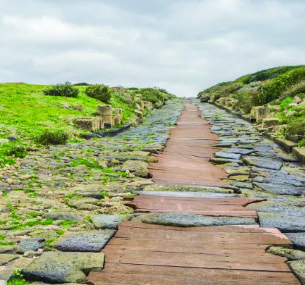

115
ഗതാഗത - ആശയവിനിമയസംവിധാനങ്ങൾ
രംഗത്ത് വലിയ മാറ്റങ്ങളുുണ്ായി. ചരക്കുുകളെയുും മനുഷ്്യരെയുും ഒരുു സ്ഥലത്തുുനിന്ന്്
മറ്്ററൊരുു സ്ഥലത്തേക്കുു കൊ�ൊണ്ടുപോ�ോകാൻ വ്യത്യസ്തമായ ഗതാഗതമാർഗങ്ങൾ
പ്രയോ�ോജനപ്പെടുത്താുത്താൻ തുടങ്ങിങ്ങി.
ഗതാഗതമാർഗങ്ങൾ
കരഗതാഗതംം
ജലഗതാഗതംം
വ്യോമഗതാഗതംം
റോ�ോഡ്്
ഗതാഗതംം
റെയിൽ
ഗതാഗതംം
ഉൾനാടൻ
ഗതാഗതംം
കടൽ/സമുദ്ര
ഗതാഗതംം
ദേശീയ വ്യോമ
ഗതാഗതംം
അ്തർ ദേശീയ
വ്യോമഗതാഗതംം
കരഗതാഗതംം
കരയിലൂടെയുളള ഗതാഗതസംവിധാനമാണ് കരഗതാഗതം. കരഗതാഗതത്തിൽ
ഉൾപ്പെടുന്ന പ്രധാന ഗതാഗതമാർഗങ്ങൾ ഫ്ല
ലോചാർട്ിൽ നിന്ന്് കണ്ടെത്തിത്തി എഴുുതൂൂ.
....................................
....................................
റോ�ോഡ്് ഗതാഗതംം
വാഹനങ്ങളുടെ സുുഗമമായ സഞ്ാരം സാധ്യമാകണമെങ്ിൽ സഞ്ാരപാതകൾ
വേണ്ടേ? സഞ്ാരപാതകൾ രൂൂപംകൊ�ൊണ്ടതുുമായി ബന്ധപ്പെട്ട്് താഴെ നൽകിയി
രിക്കുന്ന ചിത്രങ്ങൾ നിരീക്ഷിക്കൂൂ.
ചക്രത്ിൽ നിന്്നുുംം വാഹനത്തിലേക്ുളള ഗതാഗതപുരോ�ോഗതി
സൂചിപ്ിക്കുന്ന ചിത്രങ്ങൾ വരച്ച്് ക്ാസിൽ പ്രദർശനംം സംംഘടിപ്ിക്ൂ.
ഗതാഗതമാർഗങ്ങൾ
ഇന്ന്് നാം ഉപയോ�ോഗിക്കുന്ന പ്രധാന ഗതാഗതമാർഗങ്ങൾ സൂൂചിപ്പിക്കുന്ന
ഫ്ല
ലോചാർട്ട്് നിരീക്ഷിക്കൂൂ.
ഒറ്റയടിപ്ാത
മൺപാത
കല്ല്് പാകിയ പാത
Page 12

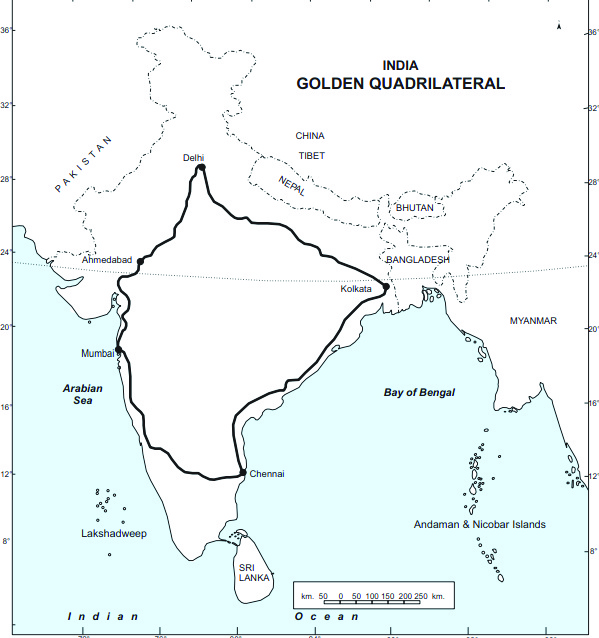
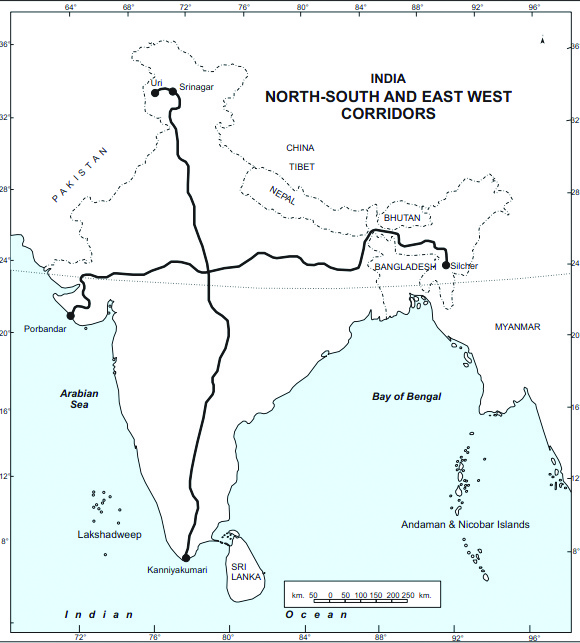


116
സാമൂഹ്്യശാസ്ത്രം ക്ാസ് V
നമ്മുടെ രാജ്യത്ത് ഗ്രാമീണപാതകൾ, സംസ്ഥാനപാതകൾ, ദേശീയപാതകൾ,
എക്സ്പ്രസ്സ്് ഹൈവേകൾ എന്ിങ്ങനെ ബൃഹത്താത്തായ റോ�ോഡ് ശൃംഖല നിലവിലുുണ്ട്്.
ലോ�ോകത്തിലെ
രണ്ാമത്തെ വലിയ റോ�ോഡ് ശൃംഖല ഇന്ത്യയിലാണ്. ഒരുു രാജ്യത്തിന്റെ
സാമൂഹ
ിക-സാമ്പത്തിത്തിക വളർച്ച ഉറപ്പുുവരുത്തുന്നതിൽ റോ�ോഡ് ഗതാഗതം പ്രധാന
പങ്കുുവഹിക്കുുന്നുു.
മക്് ആദംം റോ�ോഡുകൾ
1820-ൽ സ്കോ�ോട്ടിഷ്്് എൻജിനീയറായ ജെ�. എൽ. മക്്് ആദംംം ആണ്്് ആധുനിക
രീതിയിലെ� റോ�ോഡ്്് നിർമ്മാണത്തിന്്് തുടക്കമിട്ടത്്്. കരിങ്കൽക്കഷ്ണങ്ങൾ നിരത്തി
റോ�ോഡ്റോ�ോളർ മെെഷീനുകൾ ഉപയോ�ോഗിച്ച്്് നിർമ്മിിക്കുന്ന ഇത്തരംംം റോ�ോഡുകൾ ‘മക്്് ആദംംം
റോ�ോഡുകൾ' എന്ന്്് അറിയപ്പെ�ടുന്നു.
ഒറ്റയടിപ്ാതകളുും മൺപാതക
ളുുമാണ് പണ്ടുുകാലത്ത് ഗതാ
ഗതത്തിന് ഉപയോ�ോഗിച്ിരുന്നത്.
കാലക്രമത്തിൽ കല്ല്് പാകിയ
പാതകളുും കോ�ോൺക്രീറ്റ്് പാത
കളുും ടാർ ചെയ്ത പാതകളുും
നിലവിൽ വന്നുു.
ഇന്തത്യത്യയിലെ പ്രധാന ഹൈവേക
ൾ
സുവർണ്ണചതുഷ്�്കകോോണംം
(Golden Quadrilateral)
ഇന്തത്യത്യയിലെ
പ്രധാന
വ്യാവസാ
യിക-കാർഷിക കേന്ദ്രങ്ങളെ ബന്ി
പ്ിക്കുന്ന ദേശീയപാതാശൃൃംഖലയാണിത്്.
ഡൽഹി, കൊ�ൊൽക്കത്ത, മുംബൈ
,
ചെന്നൈ എന്ീ നഗരങ്ങളിലൂടെയുംം
12 സംംസ്ാനങ്ങളിലൂടെയുംം ഈ പാത
കടന്നുപോോകുന്ു.
വടക്ക്്-തെക്ക്് ഇടനാഴിയുംം
കിഴക്ക്്- പടിഞ്ാറ്് ഇടനാഴിയുംം
(North-South and East-West
Corridors)
വടക്ക്്-തെക്ക്് ഇടനാഴി ശ്ീനഗറിനെ
കന്യയാകുമാരിയുമായുംം കിഴക്ക്്-പടി
ഞ്ാറ്് ഇടനാഴി സിൽച്ാറിനെ പോോർബ
്തറുമായുംം ബന്ിപ്ിക്ുന്ു.
കോ�ോൺക്രീറ്റ്് പാത
ടാർചെയ്ത പാത
Page 13

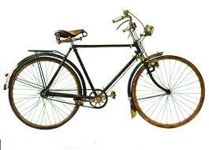

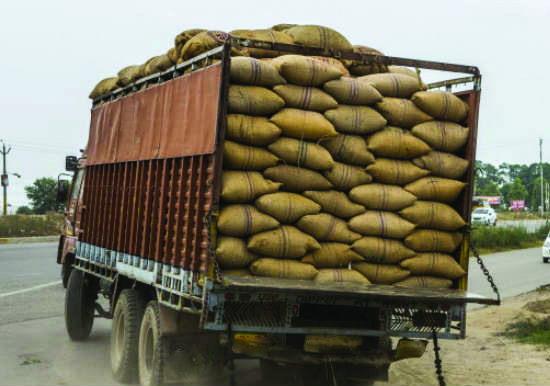

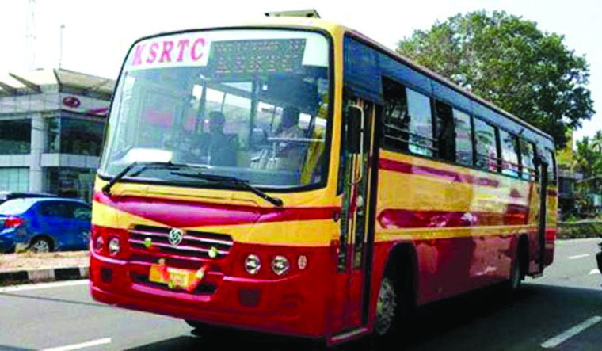

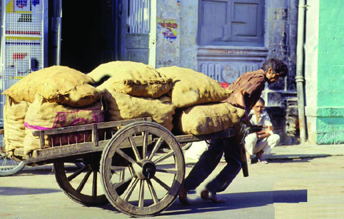
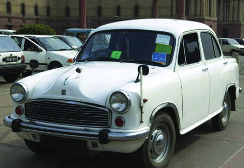
117
ഗതാഗത - ആശയവിനിമയസംവിധാനങ്ങൾ
ചക്രങ്ങൾ ഉപയോ�ോഗിച്ുളള വാഹനങ്ങളുടെ വികാസപരിണാമംം സൂചിപ്ിക്കുന്ന ചിത്രങ്ങൾ
നിരീക്ഷിച്ച്് റോ�ോഡുഗതാഗതത്ിൽ വന്ന മാറ്റങ്ങളെക്ുറിച്ച്് ചർച്ചചെയ്ത്് കുറിപ്പ് തയ്ാറാക്ൂ.
പഴയതുംം പുതിയതുമായ വിവിധ വാഹനങ്ങളുടെയുംം പാതകളുടെയുംം ചിത്രങ്ങൾ
ശേഖരിച്ച്് ആൽബംം തയ്ാറാക്ി ക്ാസിൽ പ്രദർശിപ്ിക്ൂ.
റോ�ോഡ്് ഗതാഗതത്തിന്റെ മേന്മകൾ
• താരതമ്യേ�േന ചെ�ലവ്്് കുുുറവ്്
• എല്ലാ വിഭാഗം ജനങ്ങൾക്കുംം� പ്രാപ്യയമാാകുുന്നുു
• ഹ്രസ്വവദൂൂൂര യാത്രകൾക്ക്്് ഏറ്റവുംം� അനുുയോ�ാജ്യം�ം
•
•
റെയിൽഗതാഗതംം
ഏതുപ്രാുപ്രായ്കാർക്്കുുംും കൗതുുകം ഉണർത്തുന്ന
ഒരുു കാഴ്ച തന്നെയാണല്്ലലോ
തീവണ്ി. കരയിലെ ഏറ്റവുും വേഗതയേറിയ ഗതാഗത സംവിധാനമാണിത്. ബ്രിട്ടനി
ലാണ് റെയിൽവേ സംവിധാനം ആരംഭിച്ചത്. ആവിയന്ത്രത്തിന്റെ കണ്ടുുപിടിത്തത്്തതോ
ടെയാണ് ലോ�ോക്ക
കോമോ�ോട്ീവ് എന്ന തീവണ്ി ഉദയം ചെയ്തത്. 1825-ൽ ജോ�ോർജ്
സ്റ്റീെഫൻസൺ ബ്രിട്ടനിൽ ആദ്യത്തെ ലോ�ോക്ക
കോമോ�ോട്ീവ് തീവണ്ി എൻജിൻ നിർമ്ിച്ചുു.
ഇത് പ്രവർത്തിപ്പിക്കാ്കാനുള്ള ഇന്ധനമായി കൽ്കരിയാണ് ഉപയോ�ോഗിച്ിരുന്നത്.
പിൽ്കാലത്ത് സാങ്കേതികവികാസത്തിന്റെ ഫലമായി ഡീസൽ എൻജിനുുകളുും
ഇലക്ടിക് എൻജിനുുകളുും നിലവിൽ വന്നുു.
Page 14


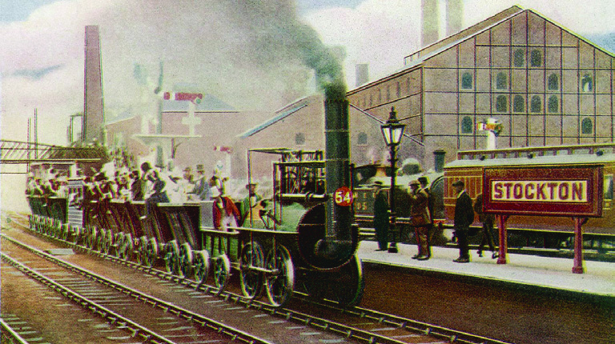
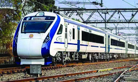
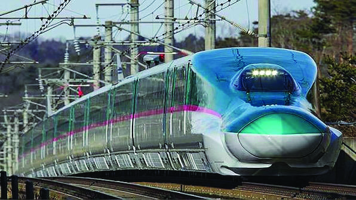
118
സാമൂഹ്്യശാസ്ത്രം ക്ാസ് V
1825-ൽ ഇംംംഗ്ലണ്ടിലെ� സ്റ്റോǢോക്്ട്ടൻ-ഡാർലിംം�ങ്്ടൻ എന്നീ നഗരങ്ങളെ�
ബന്ധിപ്പിച്ചുകൊ�ൊണ്ട്്് ലോ�ോകത്തെ� ആദ്യയത്തെ� റെെയിൽപാത നിർമ്മിിക്കപ്പെ�ട്ടു.
ജോ�ോർജ്്് സ്റ്റീഫൻസൺ നിർമ്മിിച്ച ‘സ്റ്റീഫൻസൺ റോ�ോക്കറ്റ്്് ’ എന്ന ലോ�ോക്കോ�ോമോ�ോട്ടീവ്്്
ഈ പാതയിലൂടെെ ഓടിിച്ചുകൊ�ൊണ്ടാണ്്് ലോ�ോകത്തെ� റെെയിൽ ഗതാഗതത്തിന്്്
തുടക്കംംം കുറിച്ചത്്്.
ചിത്രങ്ങൾ നിരീക്ഷിച്ച്് വിവിധ കാലഘട്ടങ്ങളിലെ തീവണ്ികളുടെ
സവിശേഷതകൾ എഴുുതുുക.
1. കൽ്കരി കൊ�ൊണ്ടുപോ�ോകുന്ന തീവണ്ി
2. ....................................................................
3. ....................................................................
4. ....................................................................
5. ....................................................................
6. ബുള്ളറ്റ്് ട്്രെയിൻ
വിവിധ കാലഘട്ടങ്ങളിലെ തീവണ്ടിയുടെ ചിത്രങ്ങൾ
3
4
5
6
1
2
Page 15


119
ഗതാഗത - ആശയവിനിമയസംവിധാനങ്ങൾ
ബ്ിട്ീഷുുകാരാണ് ഇന്ത്യയിൽ റെയിൽ ഗതാഗതത്തിന് തുടക്കം്കം കുുറിച്ചത്. ഇന്ത്യയിൽ
നിന്ന്് അസംസ്കൃത വസ്തുക്കളുു
ം പ്രകൃതിവിഭവങ്ങളുും കടൽമാർഗം അവർ യൂറോ�ോപ്പിലേക്ക്ക്ക്
കൊ�ൊണ്ടുപോ�ോയിരുുന്നുു. ഈ വസ്തുക്കളുു
ം വിഭവങ്ങളുും തുുറമുുഖങ്ങളിലേക്കെത്തിക്കാ്കാനുളള
സംവിധാനം എന്ന നിലയിലാണ് റെയിൽഗതാഗതം ഇന്ത്യയിൽ ആരംഭിക്കുന്നത്.
ദൈനംദിനയാത്രയ്കക്കകുംും ചരക്കുുനീ്കത്തിനുും
വിനോ�ോദയാത്രയ്കക്കകുംും ജനങ്ങൾ പ്രധാനമായുും
ആശ്രയിക്കുന്ന ഗതാഗത സംവിധാനമാണ്
റെയിൽവേ. വളരെ വിപുുലമായ റെയിൽവേ
ശൃംഖല ഇന്ത്യയിൽ നിലവിലുുണ്ട്്. ലോ�ോക
ത്തിലെ
ഏറ്റവുും ദൈർഘ്യമേറിയ റെയിൽവേ
സംവിധാനമുളള രാജ്യങ്ങളിൽ ഒന്ാണ്
നമ്മുടേത്. ഗതാഗതസൗകര്യം മെച്ചപ്പെടുു
ത്തുന്ന
തിനുും അന്തരീക്ഷ മലിനീകരണം
കുുറയ്ക്കുന്നതിനുും ഇന്ത്യയിലെ പ്രധാന
നഗരങ്ങളിൽ മെട്്രരോറെയിൽ സംവിധാനം
ആരംഭിച്ിട്ടുുണ്ട്്.
ഇന്തത്യത്യയിലെ ആദ്്യത്തെ റെയിൽപാത
ബോ�ോംംബെ
(ഇപ്്പപോഴത്തെ മുംബൈ
) മുതൽ
താനെ വരെ-1853
കേരളത്തിലെ ആദ്്യത്തെ റെയിൽപാത
ബേപ്ൂർ മുതൽ തിരൂർ വരെ-1861
മെട്്രരോറെയിൽ
വൻനഗരങ്ങളിലെ� യാത്രാ ക്ലേãശം
പരിഹരിക്കുുന്നതിനുംം� അന്തരീക്ഷ
മലിനീകരണം കുുുറയ്ക്കുുന്നതിനുുു
മാണ് മെട്്രരോറെയിൽ ആരംഭിച്ചത്.
കൊ�ൊൽ്കത്ത, ഡൽഹി, മുുംബൈ,
ബെ
ംഗളൂൂരുു, ചെന്നൈ, കൊ�ൊച്ി തുടങ്ങിങ്ങിയ
ഇന്ത്യയിലെ പ്രധാന നഗരങ്ങളിലെല്ാം
മെട്്രരോറെയിൽ സംവിധാനം നിലവിലുുണ്ട്്.
ഈ പാഠത്തിന്റെ അവസാനഭാഗത്ത്് (പേജ്് 131) നൽകിയിട്ുളള
കേരളത്തിന്റെ ഗതാഗതഭൂപടംം നിരീക്ഷിച്ച്് റെയിൽഗതാഗതംം ഇല്ലാത്ത
ജില്ലകൾ കണ്ടെത്ി എഴുതുക.
റെയിൽഗതാഗതത്തിന്റെ മേന്മകൾ
• കൂൂടുുുതൽ പേ�ർക്ക്്് യാത്രചെ�യ്യാൻ കഴിയുുന്ന ഏറ്റവുംം� ചെ�ലവുുകുുുറഞ്ഞ
ഗതാഗതമാർഗം
• കൂൂടുുുതൽ ചരക്കുുനീക്കത്തിന്്് സാധിക്കുുന്നുുു
• സമ്പദ്��വ്യയയവസ്ഥയുുടെ വളർച്ചയിൽ പ്രധാന പങ്കുുുവഹിക്കുുന്നുുു
•
Page 16
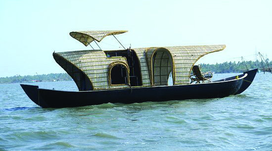

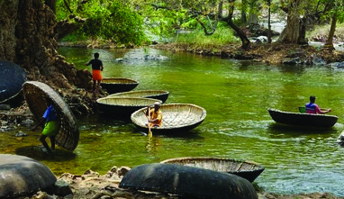
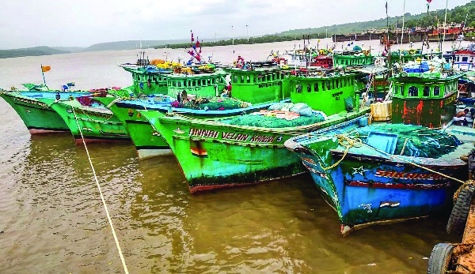

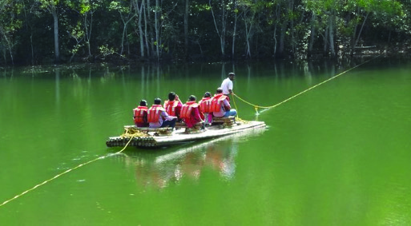
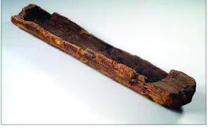
120
സാമൂഹ്്യശാസ്ത്രം ക്ാസ് V
ജലഗതാഗത മാർഗങ്ങൾ കണ്ടെത്താത്താൻ മനുഷ്്യരെ പ്രേരിപ്പിച്ച സാഹചര്യങ്ങൾ
എന്തെല്ാമായിരിക്്കാാംാം?
ജലഗതാഗതംം
ചിത്രങ്ങൾ നിരീക്ഷിക്കൂൂ.
ഏതൊ�ൊക്കെ ആവശ്യങ്ങൾ്കാണ് മനുഷ്്യർ ജലഗതാഗതത്തെ ആശ്രയിക്കുന്നത്?
• സഞ്ചാരം
•
ആദ്്യകാല തോ�ോണി
മനുഷ്്യർക്്കുുംും മൃഗങ്ങൾക്്കുുംും ജലാശയങ്ങൾ
മുുറിച്ചുുകടക്കാ്കാൻ കഴിയാത്ത സാഹചര്യമാ
യിരിക്്കാാംാം ജലഗതാഗതം എന്ന ആശയ
ത്തിൽ എത്തിച്ചത്. ഒറ്റത്തടിയുും ചങ്ങാട
ങ്ങളുും ഉപയോ�ോഗിച്ിരുന്ന മനുഷ്്യർ
മരത്തടിയുടെ മധ്യഭാഗം തീയിട്ട്് കരിച്ച്്
പൊ�ൊള്ളയാ്കിയാണ് ആദ്യകാലത്ത് തോ�ോണി
കൾ നിർമ്ിച്ിരുന്നത്. പിന്നീട്് പണിയായുുധ
ങ്ങളുടെ കണ്ടെത്തൽ തോ�ോണി നിർമ്ാണം
Page 17

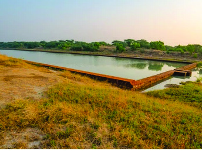


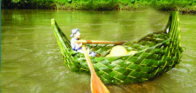

121
ഗതാഗത - ആശയവിനിമയസംവിധാനങ്ങൾ
മെെസോ�ോപ്പൊ�ൊട്ടേ�മിയൻ ജനത വ്യാ�ാപാരരംംംഗത്ത്്് കപ്പലുകൾ പോോലെ�യുള്ള
ജലയാനങ്ങൾ ഉപയോ�ോഗിച്ചിരുന്നു. തുഴകളാലുംം� നീളൻ കമ്പുുകളാലുംം� മുന്നോ�ോട്ട്്്
നീക്കിക്കൊ�ൊണ്ടുപോോകുന്ന വിവിധ വലുപ്പത്തിലുള്ള ജലയാനങ്ങൾ ഇവർ
നിർമ്മിിച്ചിരുന്നു. ചരക്കുനീക്കത്തിനുംം� സഞ്ചാരത്തിനുംം� ഈ ജലയാനങ്ങൾ
ഉപയോ�ോഗിച്ചു.
ലോ�ോഥലിലെ കപ്പൽനിർമ്മാണ കേന്ദ്രം
എളുപ്പമാ്കി. ക്രമേണ പലതരത്തിലുള്ള വള്ളങ്ങളുും പായ്ക്കപ്പലുുകളുും നിർമ്ിച്ചുു.
ഇത് ജലഗതാഗതത്തെ കൂടുുതൽ മെച്ചപ്പെടുത്തിുത്തി.
കേരളത്തിലെ ഉൾനാടൻ ജലഗതാഗതപാതകൾ
കൊ�ൊല്ലംംം മുതൽ കോ�ോട്ടപ്പുറംംം വരെെയുളള ദേ�ശീയ ജലപാത നമ്പ�ർ -3, കോ�ോഴിക്കോ�ോട്്്
മുതൽ കൊ�ൊടുുങ്ങല്ലൂർ വരെെയുളള കനോ�ോലി കനാൽ എന്നിവയാണ്്് കേ�രളത്തിലെ�
പ്രധാനപ്പെ�ട്ട രണ്ട്്് ഉൾനാടൻ ജലഗതാഗത പാതകൾ. റെെയിൽ സംംവിിധാനംംം
ശക്തിിപ്പെ�ടുന്നതുവരെെ ചരക്കുനീക്കത്തിന്്് പ്രധാനമായുംം� ഈ ജലപാതകളെ�യാണ്്്
ആശ്രയിച്ചിരുന്നത്്്. ഉൾനാടൻ ജലപാതകൾ ഇന്ന്്് വൻതോ�ോതിൽ വിനോ�ോദസഞ്ചാരികളെ�
ആകർഷിക്കുന്നുണ്ട്്്.
നിങ്ങൾ സഞ്ചരിച്ിട്ുളള ജലഗതാഗത വാഹനങ്ങൾ ഏതെല്ാമാണ്്?
നിങ്ങൾക്ക്് പരിചിതമായ പരിസ്ിതി സൗഹൃദവസ്തുക്കൾ ഉപയോ�ോഗിച്ച്്
വിവിധ ജലഗതാഗത വാഹനമാതൃകകൾ നിർമ്മിച്ച്് ക്ാസ്ിൽ പ്രദർശിപ്ിക്കുക.
ജലഗതാഗതത്തെ ഉൾനാടൻ ജലഗതാഗതം, സമുദ്ര ജലഗതാഗതം എന്ിങ്ങനെ
രണ്ായി തിരിക്്കാാംാം. റെയിൽവേയുടെ കടന്നുുവരവിന് മുുമ്പ്് ഇന്ത്യയിലെ പ്രധാന
ഗതാഗതമാർഗമായിരുുന്നുു ഉൾനാടൻ ജലഗതാഗതം. നദികളുും കായലുുകളുും
ധാരാളമുളള പ്രദേശങ്ങളിലാണ് ഉൾനാടൻ ജലഗതാഗതം പുരോ�ോഗതിപ്രാപിച്ചത്.
പിൽ്കാലത്ത് ഇതിനായി കനാലുുകൾ നിർമ്മിക്കപ്പെട്ടുു.
സിന്ധുനദീതടസംംം
സ്കാാരകേ�ന്ദ്രമായ ഗുജറാത്തിലെ�
ലോ�ോഥലിൽ കപ്പൽനിർമ്മാണ കേ�ന്ദ്രത്തിന്റെź (ഡോോക്്്
യാഡിന്റെź) അവശിഷ്ടങ്ങൾ കണ്ടെ�ത്തിയിട്ടുണ്ട്്്.
ലോ�ോഥലിൽ നിന്ന്്് കണ്ടെ�ത്തിയ മുദ്രകളിലുംം� ഹരപ്പയിൽ
നിന്ന്്് കണ്ടെ�ത്തിയ മെെസോ�ോപ്പൊ�ൊട്ടേ�മിയൻ മുദ്രകളിലുംം�
ബോ�ോട്ടിന്റെź രൂപങ്ങൾ പതിച്ചിട്ടുണ്ട്്്. ഇത്്് അക്കാലത്ത്്് ജല
ഗതാഗതംംം നിലനിന്നിരുന്നതിന്്് തെ�ളിവാണ്്്.
Page 18

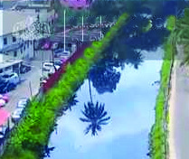


122
സാമൂഹ്്യശാസ്ത്രം ക്ാസ് V
ഇന്ത്യയുുമായുള്ള വ്യാപാരം മെച്ചപ്പെടുത്തുന്നതിനായി യൂറോ�ോപ്യർ ജലഗതാഗതത്തിന്
പ്രാധാന്യം നൽകി. നഗരങ്ങളിലേക്ക്ക
്ക് കൽ്കരി കൊ�ൊണ്ടുപോ�ോകുന്നതിനുള്ള മാർഗം
എന്ന നിലയിലാണ് യൂറോ�ോപ്യർ ആദ്യകാലങ്ങളിൽ കനാലുുകൾ നിർമ്ിച്ിരുന്നത്.
ക്രമേണ, ഇത്തരം കനാലുുകൾ ജലയാത്രയ്കായി കൂടുുതൽ ഉപയോ�ോഗി്കാൻ തുടങ്ങിങ്ങി.
കേരളത്തിത്തിൽ നിർമ്മിക്കപ്പെട്ട കനാലുുകളാണ് കനോ�ോലി കനാൽ, പാർവതി പുുത്തനാർ
തുടങ്ങിങ്ങിയവ. 'കിഴ്കിന്റെ വെനീസ്' എന്നറിയപ്പെടുന്ന ആലപ്പുുഴയിൽ ധാരാളം
കനാലുുകളുുണ്ട്്.
കനോ�ോലി കനാൽ
ബ്രിിട്ടീഷ്്് ഭരണകാലത്ത്്് മലബാർ ജില്ലാ
കളക്ടർ ആയിരുന്ന എച്ച്്്. വി. കനോ�ോലി
1845ൽ കോ�ോഴിക്കോ�ോട്്് മുതൽ കൊ�ൊടുുങ്ങല്ലൂർ
വരെെ വിശാലമായ ജലഗതാഗത മാർഗംംം എന്ന ആശയംംം
മുന്നോ�ോട്ടുവച്ചു. പിന്നീട്്് പൊൊന്നാനി, ചാവക്കാട്്് ഭാഗങ്ങൾ
കൂടിി ഉൾപ്പെ�ടുത്തി കൊ�ൊടുുങ്ങല്ലൂർ വരെെയുള്ള പുഴകളെ�
ബന്ധിപ്പിച്ചുകൊ�ൊണ്ട്്് കനാലുകൾ നിർമ്മിിച്ചു. ഈ
ജലപാത കനോ�ോലി കനാൽ എന്നറിയപ്പെ�ട്ടു.
പാർവതി പുത്തനാർ
തിരുവനന്തപുരംംം ജില്ലയിലെ� വേ�ളി-കഠിനംംകുുളംംം
കായലുകളെ� ബന്ധിപ്പിച്ചുകൊ�ൊണ്ട്്് നിർമ്മിിച്ച കനാൽ
പാതയാണ്്് പാർവതി പുത്തനാർ.
പായ്ക്കപ്പൽ
മുുൻകാലങ്ങളിൽ രാജ്യാന്തരയാത്രകൾക്്കുുംും ചരക്കുുനീ്കത്തിനുും ഏറ്റവുുമധികം
ആശ്രയിച്ിരുന്നത് സമുദ്രഗതാഗതത്തെ ആയിരുുന്നുു. കാറ്ിന്റെ ദിശാശക്തികൊ�ൊണ്ട്്
സഞ്ചരിക്കുന്ന പായ്ക്കപ്പലുുകളുടെ കണ്ടുുപിടിത്തം സമുദ്രഗതാഗതത്തെ മെച്ചപ്പെടുത്തിുത്തി.
അതോ�ോടെ മറ്റുദേശങ്ങളിലേക്കുള്ള യാത്രകൾ വർധിച്ചുു. ആവിയന്ത്രത്തിന്റെ
കണ്ടെത്തലോ�ോടെ ആവിശക്ി ഉപയോ�ോഗിച്ച്് പ്രവർത്തിക്കുന്ന
കപ്പലുുകൾ
നിർമ്മിക്കുുകയുും കടൽയാത്ര കൂടുുതൽ സുുരക്ഷിതമാവുുകയുും ചെയ്തുു. പിന്നീട്്
ഇന്ധനങ്ങൾ ഉപയോ�ോഗിക്കുന്ന കപ്പലുുകളുും നിർമ്മിക്കപ്പെട്ടുു.
കപ്പൽ
Page 19

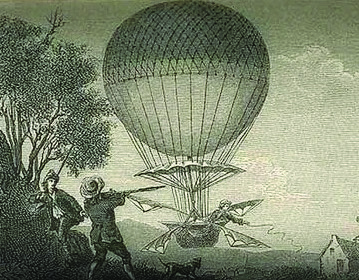

123
ഗതാഗത - ആശയവിനിമയസംവിധാനങ്ങൾ
സമുദ്രജലഗതാഗതം സാധ്യമാകുന്നത് തീരദേശ ജലപാതയിലൂടെയുും അന്താരാഷ്ട്ര
ജലപാതയിലൂടെയുുമാണ്. രാജ്യത്തിന്റെ തീരത്ത് സ്ഥിതിചെയ്യുന്ന തുുറമുുഖങ്ങൾ
ക്കിടയിൽ ചരക്കുുകളെയുും യാത്രക്കാരെയുും കൊ�ൊണ്ടുപോ�ോകുന്നത് തീരദേശജലപാതകൾ
വഴിയാണ്. എന്ാൽ മറ്റുു രാജ്യങ്ങളുടെ തുുറമുുഖങ്ങൾക്കിടയിൽ ചരക്കുുനീ്കത്തിനുും
യാത്രക്കാരെ കൊ�ൊണ്ടുപോ�ോകുന്നതിനുും അന്താരാഷ്ട്ര ജലപാതയാണ് ഉപയോ�ോഗിക്കുന്നത്.
ഈ ജലപാതയിലൂടെയാണ് ഇറക്കുുമതിയുും കയറ്റുുമതിയുും പ്രധാനമായുും നടക്കുന്നത്.
ജലഗതാഗതത്തിന്റെ മേന്മകൾ എന്്തതൊക്കെയാണ്?
• താരതമ്യേ�േന ചെ�ലവ്്് കുുുറവ്്്
• മലിനീകരണം കുുുറവ്്്
•
•
സമുദ്രതീരത്ത്് കപ്പൽ അടുപ്ിക്കുന്ന സ്ഥലമാണ്് തുറമുഖംം. കേരളത്തിലെ
പ്രധാന തുറമുഖങ്ങൾ ഏതൊ�ൊക്കെയാണ്്? പാഠത്തിന്റെ അവസാനഭാഗത്ത്്
നൽകിയിട്ുള്ള (പേജ്് 131) ഗതാഗതഭൂപടംം നിരീക്ഷിച്ച്് കണ്ടെത്ൂ.
ഫ്രാൻസിലെ� ഒരു കടലാാസ്്് ഫാക്ടറി ഉടമ
യായിരുന്നു ജാക്വിി�സ്്് മോ�ോണ്ട്്് ഗോ�ോൾഫിയർ.
നനഞ്ഞവസ്ത്രംം പെട്ടെെന്ന്്് ഉണക്കുന്നതിനായി
തൂക്കിയിട്ടിരുന്ന വസ്ത്രത്തിനു താഴെെ തീകൂട്ടി
കത്തിക്കുകയായിരുന്നു ജാക്വിി�സിന്റെź ഭാര്യയ. ഉണങ്ങാൻ
ഇട്ടിരുന്ന വസ്ത്രംം ആകാശത്തേ�ക്ക്്് പറന്നുയർന്നത്്്
അദ്ദേŔഹത്തിൽ അതിശയംംം ഉളവാക്കി. ആ കാഴ്്്ച
ജാക്വവസിനെ� ഏറെെ ചിന്തിപ്പിച്ചു. പിന്നീടുള്ള ദിവസ
ങ്ങൾ അദ്ദേഹത്ിന്് വിശ്രമമുണ്ടായിരുന്നില്ല. തന്റെ സഹോ�ോദരനായ ജോ�ോസഫ്്
മോ�ോണ്ട്് ഗോ�ോൾഫിയറുമായി ചേർന്ന്് ജാക്്വവിസ്് ഒരു കൂറ്റൻ ബലൂൺ ഉണ്ടാക്ി. ചൂട്്
വായുനിറച്ച ആ ബലൂൺ അവരെ അത്ുതപ്പെടുത്തിക്്കകൊണ്ട്് മുകളിലേക്ക്് ഉയർന്ു.
അതിനുശേഷംം ബലൂണിന്റെ കീഴ്ഭാഗത്ത്് കുട്ട വച്ചുപിടിപ്ിച്ച്് സ്്വന്തംം വീട്ടിലെ കോ�ോഴി,
താറാവ്് എന്ിവയെ യാത്രക്ാരാക്ി. തുടർന്ന്് ജാക്്വവിസുംം ജോ�ോസഫുംം ആ ബലൂൺ
വാഹനത്ിൽ പാരീസ്് നഗരത്ിന്് മുകളിലൂടെ അരമണിക്ൂർ പറന്ു.
വ്യോമഗതാഗതംം
ജലഗതാഗതത്തിന്റെ മാർഗങ്ങളുംം മേന്മകളുംം സൂചിപ്ിക്കുന്ന ചാർട്ട്്
തയ്ാറാക്കുക.
Page 20
124
സാമൂഹ്്യശാസ്ത്രം ക്ാസ് V
കുുറിപ്പ്് വായിച്ചല്്ലലോ. 1783-ൽ ഉണ്ായ ഈ സംഭവമാണ് പിന്നീട്് ആകാശ
യാത്രകൾക്ക്ക
്ക് തുടക്ക്കമിട്ടത്. ചൂടുുവായുു നിറച്ച ബലൂൂണുുകളാണ് മനുഷ്്യർ ആകാശയാത്രയ്ക്ക്
ആദ്യം ഉപയോ�ോഗിച്ിരുന്നത്. അതിനുശേഷം സാന്ദ്രതകുുറഞ്ഞ വാതകങ്ങൾ വലിയ
ബലൂൂണുുകളിൽ നിറച്ച്് ആകാശക്കപ്പലുുകൾ നിർമ്ിച്ചുു. തുടർന്ന്് വേഗതകുുറച്ച്്
താഴെയെത്താത്താൻ സഹായിക്കുന്ന പാരച്യയൂൂട്ടുുകൾ കണ്ടുുപിടിച്ചുു. എന്ാൽ ഇവയൊ�ൊന്്നുുംും
മനുഷ്്യർക്ക്ക
്ക് സൗകര്യപ്രദമായി നിയന്ത്രിച്ച്് ഉപയോ�ോഗിക്കുുവാൻ കഴിഞ്ഞിരുുന്നില്ല.
ഫ്ലെയർ 1 വിമാനംം
ഓർവിൽ റൈറ്റ്്
വിൽബർ റൈറ്റ്്
പാരച്യൂട്ട്്
ആകാശക്കപ്പൽ
ഇന്നത്തെ
വിമാനത്തിന്റെ ആദ്യരൂൂപം എന്ന്് പറയാവുന്ന തരത്തിൽ വിമാനം നിർമ്മിച്ചത്
അമേരിക്കക്കാക്കാരായ ഓർവിൽ റൈറ്റ്്, വിൽബർ റൈറ്റ്് എന്ീ സഹോ�ോദരന്ാരാണ് (റൈറ്റ്്
സഹോ�ോദരന്ാർ). ഇവർ നിർമ്മിച്ച വിമാനത്തിന്റെ പേര് ഫ്ലെയർ-1 എന്ായിരുുന്നുു.
അമേരി്കയിലെ നോ�ോർത്ത് കരോ�ോലിനയിൽ നിന്ന്് 1903 ഡിസംബർ 17-നാണ്
ഫ്ലെയർ-1 പറന്നുുയർന്നത്.
കാലക്രമേണ ഹെ
ലികോ�ോപ്്റ്്റുുകൾ, ജെറ്റ്് വിമാനങ്ങൾ, യാത്രാവിമാനങ്ങൾ,
സൂപ്പർസോ�ോണിക് വിമാനങ്ങൾ എന്ിവ നിർമ്മിക്കാ്കാൻ മനുഷ്്യർക്ക്ക
്ക് സാധിച്ചുു.
രാജ്യത്തിനകത്്തുുംും പുുറത്്തുുംും ദീർഘദൂൂരയാത്രകൾ്കായി വളരെയേറെ പ്രയോ�ോജനപ്പെടുന്ന
ഒരുു യാത്രാമാർഗമാണ് വ്യോമഗതാഗതം. ഏറ്റവുും വേഗതയേറിയ ഗതാഗതസംവിധാനവുും
ഇത് തന്നെയാണ്. സൈനിക ആവശ്യങ്ങൾ്കായുും വ്യോമഗതാഗത സംവിധാനം
ഉപയോ�ോഗിക്കുുന്നുു.
ഫ്ലെയർ - 1
Page 21


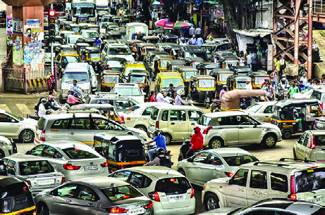

125
ഗതാഗത - ആശയവിനിമയസംവിധാനങ്ങൾ
ഈ പാഠത്തിന്റെ അവസാനഭാഗത്ുളള (പേജ്് 131) കേരളത്തിന്റെ
ഗതാഗതഭൂപടംം നിരീക്ഷിച്ച്് കേരളത്തിലെ അ്താരാഷ്ട്ര വിമാനത്ാവളങ്ങൾ
സ്ിതി ചെയ്യുന്ന ജില്ലകൾ എഴുതുക.
ഇന്തത്യത്യയിലെ വ്്യയോമഗതാഗതംം
ഇരുപതാം നൂറ്റാണ്ടിന്റെź ആരംംഭത്തോ�ോടെെയാാണ്്് ഇന്ത്യയയിൽ വ്യോ�ോ�മഗതാഗതംംം
ആരംംഭിിച്ചത്്്. 1911-ൽ അലഹബാ
ാദിൽ നിന്ന്്് 10 കിലോ�ോമീറ്റർ മാത്രംംം
അകലെ�യുളള നൈൈനിയിലേ�ക്ക്്് കത്തുകൾ വഹിച്ചുകൊ�ൊണ്ടുളള വിമാനംംം
പറന്നുയർന്നതോ�ോടെെയായിരുന്നു ഇന്ത്യയയിൽ വ്യോ�ോ�മഗതാഗതത്തിന്്് തുടക്കംംം കുറിച്ചത്്്.
1912-ൽ ഇന്ത്യയയിലേ�ക്കുംം� തിരിച്ചുമുളള ആദ്യയത്തെ� അന്താരാഷ്ട്ര വിമാനംംം ലണ്ടനിൽ
നിന്ന്്് കറാച്ചിയിലേ�ക്കുംം� അവിടെെനിിന്ന്്് ഡൽഹിയിലേ�ക്കുംം� സർവീസ്്് നടത്തി.
ഇന്ത്യയയിലെ� ആദ്യയത്തെ� വാണിജ്യയ വിമാനക്കമ്പനിിയായ ടാറ്റ എയർലൈൈൻസ്്് 1932-ൽ
കറാച്ിമുതൽ മുംബൈ
വരെ ആദ്്യ സർവീസ്് നടത്ി. ഇന്തത്യത്യയിലെ ആദ്്യത്തെ വിമാനത്ാവളംം
മുംബൈ
യിലെ ജുഹുവിലാണ്്. ലോ�ോകത്തിലെ ഏറ്റവുംം വിപുലമായ വ്യോമഗതാഗത
ശൃൃംഖലയുളള രാജ്യങ്ങളിൽ ഒന്ായി ഇന്തത്യത്യ ഇന്ന്് മാറിയിരിക്ുന്ു.
ഈ വാർത്ത ശ്രദ്ിച്ചില്ലേ. എന്തുകൊ�ൊണ്ടാണ്ടായിരിക്്കാാംം ജീവനക്ാർ സ്്വകാര്യവാഹനങ്ങൾ
ഒഴിവാക്ി പൊൊതുഗതാഗത സംംവിധാനങ്ങൾ ഉപയോ�ോഗിക്ാൻ നിർദേശമുണ്ടായത്്?
ചിത്രങ്ങൾ നിരീക്ഷിക്ൂ.
വ്യോമഗതാഗതത്തിന്റെ മേന്മകൾ
• ഏറ്റവുംം� വേ�ഗതയേ�റിയ ഗതാഗതമാർഗം
• വിവിധ ഭൂൂൂഖണ്ഡങ്ങളിലെ� രാജ്യയങ്ങളെ� ബന്ധിപ്പിക്കുുുകയുംം� ഭൂൂമിയെ� ഒരുുു
ആഗോ�ോളഗ്രാഗ്രാമമാക്കുുകയുും ചെയ്യുുന്നുു.
• ദേ�ശീയ പ്രതിരോ�ോധത്തിന്്് ഉപയോ�ോഗപ്പെ�ടുുത്തുുന്നുുു.
•
•
വായുുമലിനീകരണം: ഡൽഹിയിൽ സ്കൂളുുകളുും കോ�ോളേജുുകളുും അടച്ിട്ടുു
വായുുമലിനീകരണം: ഡൽഹിയിൽ സ്കൂളുുകളുും കോ�ോളേജുുകളുും അടച്ിട്ടുു
ന്യയൂൂഡൽഹി: വായുുമലിനീകരണം രൂക്ഷ
മായി തുടരുന്ന സാഹചര്യത്തിൽ ഡൽഹി
യിൽ സ്കൂളുുകളുും കോ�ോളേജുുകളുും ഒരറിയിപ്പുുണ്ാ
കുന്നതുുവരെ അടച്ചിടുും. നിർമ്ാണ പ്രവർത്തന
ങ്ങൾക്കുള്ള നിരോ�ോധനവുും നീട്ി. ജീവന്കാർ
സ്വകാര്യവാഹനങ്ങൾ ഒഴിവാ്കി പൊതുുഗതാഗത
മാർഗങ്ങൾ ഉപയോ�ോഗി്കണമെന്ന്് സർ്കാർ
നിർദേശിച്ചുു.
Page 22


126
സാമൂഹ്്യശാസ്ത്രം ക്ാസ് V
ഭാഷയുംം� ചിഹ്നങ്ങളും�ംം എഴുത്തുവിദ്യയയുംം� ഇല്ലാതിരുന്ന കാലത്തെ�
വിവിധ സന്ദർഭങ്ങളിലെ� (വേ�ട്ടയാടൽ, മീൻപിടിിത്തംംം, കച്ചവടംംം, യാത്ര)
ആശയവിനിമയംംം മൂകാഭിനയത്തിലൂടെെ അവതരിപ്പിക്കുക.
വാഹനങ്ങളുടെ പെരുപ്പംം എന്്തതൊക്കെ പ്രത്യാഘാതങ്ങളാണ്് സൃഷ്ടിക്കുന്നത്്?
•
വർധിച്ച ഗതാഗതക്കുരുക്ക്്്
•
വായുമലിനീകരണംംം
•
ശബ്ദമലിനീകരണംംം
•
ആരോ�ോഗ്യയയപ്രശ്നങ്ങൾ
•
ഉയർന്നതോ�ോതിലുളള വാഹനാാപകടങ്ങൾ
•
പരിമിതമായ പാർക്കിങ്്് സൗകര്യം�ംം കാൽനടയാാത്രക്കാരുടെെയുംം� സൈൈക്കിൾ
യാത്രക്ാരുടെയുംം സുരക്ഷ കുറയ്ക്കുന്ു.
•
•
•
പൊൊതുഗതാഗതമാർഗങ്ങൾ ഉപയോ�ോഗിക്കേ�ണ്ടതിന്റെź ആവശ്യയകതയെ�ക്കുറിച്ച്്്
ക്ലാസിൽ ചർച്ച സംംംഘടിിപ്പിച്ച്്് കുറിപ്പ്് തയ്യാറാക്കൂ.
ആശയവിനിമയംം
ഒരിടത്തുുനിന്്നനോ ഒരുു വ്യക്ിയിൽ നിന്്നനോ വിവരങ്ങൾ മറ്്ററൊരിടത്തേക്കോ/
മറ്്ററൊരാളിലേക്കോ കൈമാറുന്നതാണ് ആശയവിനിമയം. പ്രാചീനകാലം മുുതൽ
മനുഷ്്യർ അവരുടെ ആവശ്യങ്ങൾ്കനുുസൃതമായി വ്യത്യസ്തങ്ങളായ ആശയവിനിമയ
ഉപാധികൾ രൂൂപപ്പെടുത്തിുത്തിയിട്ടുുണ്ട്്.
ആശയവിനിമയം നടത്തുന്നത് എങ്ങനെയെ
ല്ാമാണ്?
• സംഭാഷണത്തിലൂൂടെ
• എഴുുത്തിലൂൂടെ
• ഫോോണിലൂൂടെ
ഭാഷയോ�ോ ചിഹ്നങ്ങളോ�ോ എഴുത്തുുവിദ്യയോ�ോ ഇല്ാതിരുന്ന കാലത്ത് ഒരുു ആശയം
എങ്ങനെയായിരിക്്കാാംാം ഒരാൾ മറ്്ററൊരാളുുമായി കൈമാറിയിരുന്നത്?
• ആംഗ്യയങ്ങളിലൂൂടെ
• പ്രത്യേ�േക ശബ്ദങ്ങൾ പുുുറപ്പെ�ടുുവിച്ച്്്
•
•
Page 23


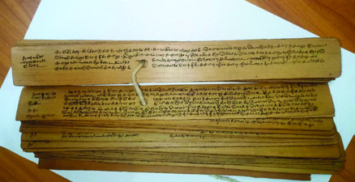
127
ഗതാഗത - ആശയവിനിമയസംവിധാനങ്ങൾ
ആദിമമനുഷ്്യർ ശരീര- മുുഖചലനങ്ങളിലൂടെയുും ശബ്ദങ്ങളിലൂടെയുും ആശയങ്ങൾ
പ്രകടിപ്ിച്ിരുുന്നുു. പിന്നീട്് അവർ ദൂരെസ്ഥലങ്ങളിലുള്ളവരുുമായി ആശയം കൈമാറാൻ
തീയുും പുുകയുും അടയാളങ്ങളായി ഉപയോ�ോഗിച്ചുു. ഏകദേശം മുപ്പതിനായിരം
വർഷങ്ങൾക്കുു മുുമ്ാണ് മനുഷ്്യർ ചിഹ്നങ്ങൾ ഉപയോ�ോഗിച്ചുുതുടങ്ങിങ്ങിയത് എന്ന്്
ചരിത്രകാർ അഭിപ്രായപ്പെടുുന്നുു.
പ്രാചീനകാലത്തെ ഗുഹ
കളുടെ ഭിത്തികളിൽ വരച്ച ചിത്രങ്ങൾ അ്കാലത്തെ
ആശയവിനിമയത്തിന് ഉദാഹരണങ്ങളാണ്. ചിഹ്നങ്ങളുും ചിത്രങ്ങളുും ആശയപ്ര
കടനത്തിന് ഉപയോ�ോഗിച്ചുു. പിന്നീട്് അവർ ലിപികൾക്്കുുംും എഴുത്തുുവിദ്യക്്കുുംും രൂൂപം
നൽകി.
ഏകദേശം 5000 വർഷങ്ങൾക്ക്ക
്ക് മുുമ്ാണ് മനുഷ്്യർ എഴുത്തുുവിദ്യ രൂൂപപ്പെടുത്തിുത്തിയത്
എന്ാണ് നിഗമനം. സുമേറിയ്കാരാണ് ആദ്യമായി എഴുത്തുുവിദ്യ വികസിപ്പിച്ചത്.
ക്യയുുണിഫോോം എന്ന പേരിൽ ഈ ലിപി അറിയപ്പെട്ടുു. ഇവ കളിമൺ ഫലകങ്ങളിലാണ്
എഴുുതിയിരുന്നത്. ഈജിപ്ിൽ രൂൂപംകൊ�ൊണ്ട ലിപിയാണ് ഹൈറോ�ോഗ്ലിഫിക്സ്.
വാർത്തകളുും സന്ദേശങ്ങളുും കൈമാറുന്നതിന് വിവിധ കാലഘട്ടങ്ങളിൽ
ഉപയോ�ോഗിച്ിരുന്ന മാർഗങ്ങളാണ് ചുുവടെ നൽകിയിരിക്കുന്നത്.
ഹൈറോ�ോഗ്ലിഗ്ലിഫിക്്സ്് ലിപി
ക്യുണിഫോ�ോംംം ലിപി
ചിത്രംം
എഴുതാനുപയോ�ോഗിച്ിരുന്ന
പ്രതലംം
ഉപകരണംം
ശില
കൂർത്ത കല്ല്്
ചെമ്്
പ് തകിട്്
ലോ�ോഹ എഴുത്ാണി
താളിയോ�ോല
എഴുത്ാണി/ നാരായംം
ഇന്നത്തെക്കാ്കാലത്ത് വാർത്തകളുും സന്ദേശങ്ങളുും കൈമാറുന്നതിന് ഉപയോ�ോഗിക്കുന്ന
മാർഗങ്ങൾ ഏതെല്ാം?
Page 24


128
സാമൂഹ്്യശാസ്ത്രം ക്ാസ് V
ആദ്യകാലങ്ങളിൽ വാർത്തകളുും സന്ദേശങ്ങളുും
ഒരിടത്തുുനിന്ന്് മറ്്ററൊരിടത്തേക്ക്ക
്ക് എത്തിക്കുു
വാ
നായി കുുതിരകളെയുും നായകളെയുും പക്ഷി
കളെയുും ഉപയോ�ോഗപ്പെടുത്തിുത്തിയിരുുന്നുു. വാർത്ത
കളുും സന്ദേശങ്ങളുും പൊ�ൊതുുജനങ്ങളെ അറിയി
ക്കുന്നതിന് രാജഭരണകാലത്ത് ഉപയോ�ോഗിച്ി
രുന്ന ആശയവിനിമയ മാർഗങ്ങളിലൊ�ൊന്ാണ്
ചിത്രീകരിച്ിരിക്കുന്നത്. അച്ചടിയന്ത്രത്തിന്റെ
കണ്ടുുപിടിത്തത്്തതോടെ വാർത്തകളുും സന്ദേശങ്ങളുും
കൈമാറുന്നത് എളുപ്പത്തിത്തിലായി.
രാജവിളംംബരംം - ചിത്രീകരണംം
തപാൽ സംവിധാനത്തിന്റെ കടന്നുുവരവ് ആശയ
വിനിമയം വേഗത്തിലാ്കി. ഗതാഗതരംഗത്തുുണ്ായ
പുരോ�ോഗതിയുും ആശയവിനിമയത്തെ സ്വാധീനിച്ചുു.
ആശയങ്ങളുും സന്ദേശങ്ങളുും വാർത്തകളുും എത്തി
ക്കുന്നതിന് തപാൽ സംവിധാനം വ്യാപകമായി
ഉപയോ�ോഗി്കാൻ തുടങ്ങിങ്ങി. ശാസ്ത്ര-സാങ്കേതിക രംഗങ്ങളി
ലുുണ്ായ
വികാസം
ആശയവിനിമയരംഗത്ത്
വൻകുുതിച്ചുുചാട്ടങ്ങൾക്ക്ക
്ക് വഴിയൊ�ൊരുക്കി്കി. ഇന്റർനെറ്ി
ന്റെയുും അനുുബന്ധ സേവനങ്ങളുടെയുും കടന്നുുവരവ്
ആശയവിനിമയരംഗത്ത് വിപ്ലവകരമായ മാറ്റങ്ങൾ
കൊ�ൊണ്ടുുവന്നുു.
അച്ചടി സാങ്കേതികവിദ്യ കണ്ടുുപിടിച്ചത് ചൈനാ്കാരാണ്. ആദ്യകാലങ്ങളിൽ
അച്ചടിയന്ത്രങ്ങൾ മരക്കട്ടകൾ ഉപയോ�ോഗിച്ാണ് പ്രവർത്തിച്ിരുന്നത്. പിന്നീട്്
ജർമ്മൻകാരനായ ഗുട്ടൻ ബർഗ് ഇരുുമ്പ്് ഉപയോ�ോഗിച്ചുള്ള
അച്ചടിയന്ത്രം കണ്ടുുപിടിച്ചുു. അച്ചടിയുടെ വരവോ�ോടെ
ആശയങ്ങളുും വാർത്തകളുും വേഗത്തിൽ പ്രചരി്കാൻ
തുടങ്ങിങ്ങി.
ഗുട്ടൻ ബർഗിന്റെ അച്ചടിയന്ത്രം
ഗുട്ടൻ ബർഗ്്
സംക്ഷേപവേദ
ാർഥം
(പൂർണ്ണമായുംം മലയാളത്ിൽ അച്ചടിച്ച
ആദ്്യത്തെ പുസ്തകംം)
ആശയവിനിമയരംംഗത്തെ മാറ്റങ്ങൾ സൂചിപ്ിക്കുന്ന ചിത്രവീഡിയോ�ോ
ടീച്ചറുടെ സഹായത്്തതോടെ തയ്ാറാക്കുക.
ഇന്തത്യത്യൻ തപാൽപെട്ി
Page 25
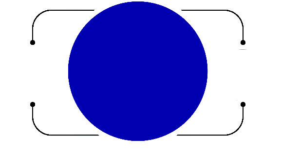


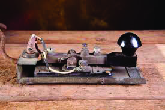


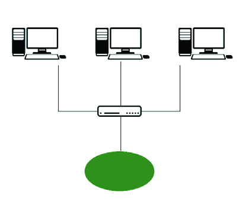
129
ഗതാഗത - ആശയവിനിമയസംവിധാനങ്ങൾ
ആശയവിനിമയരീതികൾ
വാർത്തകളുും സന്ദേശങ്ങളുും കൈമാറ്ം ചെയ്യുന്നത് മുഖ്്യമായുും രണ്ടുു രീതികളിലാണ്.
ആശയവിനിമയ
രീതികൾ
വ്യക്തിഗത
ആശയവിനിമയംം
ബഹുജന
ആശയവിനിമയംം
വ്യക്തിഗത ആശയവിനിമയംം
ഒരുു വ്യക്ിയിൽ നിന്ന്് മറ്്ററൊരുു വ്യക്ിയിലേക്ക്ക
്ക് സന്ദേശങ്ങളോ�ോ ആശയങ്ങളോ�ോ വിനിമയം
ചെയ്യുന്നതാണ് വ്യക്ിഗത ആശയവിനിമയം. ഇതിനായി പ്രയോ�ോജനപ്പെടുത്തുന്ന
ഉപാധികളാണ് വ്യക്ിഗത ആശയവിനിമയോ�ോപാധികൾ.
ബഹുജന ആശയവിനിമയംം
ഒരുു സന്ദേശമോ�ോ ആശയമോ�ോ വലിയൊ�ൊരുു ജനവിഭാഗത്തിലേക്ക്ക
്ക് എത്തിക്കുന്ന
താണ്
ബഹുുജന ആശയവിനിമയം. ഇതിനായി പ്രയോ�ോജനപ്പെടുത്തുന്ന മാധ്യമങ്ങളാണ്
ബഹുുജന ആശയവിനിമയോ�ോപാധികൾ.
മൊ�ൊബൈ
ൽ
ഫോ�ോൺ
ഇ-മെയിൽ
ഫാക്്സ്്
മെഷീൻ
ഇൻലൻഡ്്
ടെലഗ്രാഫ്്
ടെലിഫോ�ോൺ
വ്യക്തിഗത ആശയവിനിമയോ�ോപാധികൾ
റൂട്ടർ
കംമ്പ്യൂട്ടർ 1
കംമ്പ്യൂട്ടർ 2
കംമ്പ്യൂട്ടർ 3
ഇന്റർനെ�റ്റ്്്
ഇന്റർനെ�റ്റ്്്
Page 26
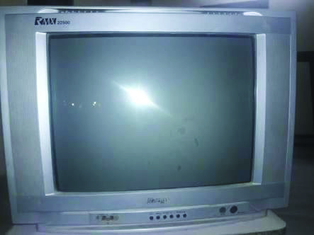


130
സാമൂഹ്്യശാസ്ത്രം ക്ാസ് V
മേൽ സൂൂചിപ്പിച്ചവ കൂടാതെ പുുസ്തകങ്ങൾ, മാഗസിനുുകൾ, കലാരൂൂപങ്ങൾ, സിനിമ,
സാമൂഹ
ികമാധ്യമങ്ങൾ തുടങ്ങിങ്ങിയ മാർഗങ്ങളിലൂടെ വലിയൊ�ൊരുുവിഭാഗം ആളുുകളുുമായി
ആശയം കൈമാറാൻ സാധിക്കുുന്നുു.
റേഡിയോ�ോ
വർത്തമാന പത്രങ്ങൾ
സെ
മിനാർ
പൊൊതുയോ�ോഗംം
തെരുവുനാടകംം
ടെലിവിഷൻ
ബഹുജന ആശയവിനിമയോ�ോപാധികൾ
ദൈനംദിന ജീവിതത്ിൽ വിവരസാങ്കേതികവിദ്്യ ചെലുത്തുന്ന സ്്വവാധീന
ത്തെക്ുറിച്ച്് ചർച്ചചെയ്ത്് കുറിപ്പ് തയ്ാറാക്കുക.
ഇന്റർനെ�റ്റ്്് അധിഷ്ഠിിത നൂതന ആശയവിനിമയ സാങ്കേ�തികവിദ്യയയ
ലോ�ോകമെെമ്പാടുുമുുളള കമ്പ്യൂൂ�ട്ടറുുുകളെ� ബന്ധിപ്പിക്കുുന്ന ശൃംഖലയാണ്്്
ഇന്റർനെ�റ്റ്്്. പലതരത്തിലുുള്ള വിവരങ്ങൾ നമുുക്ക്്് ഇന്റർനെ�റ്റിന്റെ�
സഹായത്തോ�ോടെ ലഭിക്കുുന്നുുു. ഇന്റർനെ�റ്റിന്റെ� സാധ്യയതകൾ പ്രയോ�ോജന
പ്പെ�ടുുത്തി ഉപയോ�ോഗിക്കുുന്ന ചില നൂൂൂതന ആശയവിനിമയ സംവിധാനങ്ങൾ
ചുുുവടെെ നൽകുുന്നുുു.
വീഡിയോ�ോ കോ�ോൺഫറൻസ്്
അകലെയുള്ള സ്ഥലങ്ങളിലിരിക്കുന്ന ആളുുകൾക്ക്ക
്ക് ഇന്റർനെറ്ിന്റെ സഹായത്്തതോടെ
കണ്ടുകൊ�ൊണ്ട്് സംസാരി്കാനുും ആശയങ്ങൾ കൈമാറാനുും കഴിയുും.
ഇ - കൊ�ൊമേഴ്്സ്്
ഇന്റർനെറ്റ്് സംവിധാനത്തിലൂടെ സാധനങ്ങളുും സേവനങ്ങളുും വാങ്ങുന്ന
തിനുും
വിൽക്കുന്നതിനുുമുളള സംവിധാനമാണിത്.
ഇ-മെയിൽ
ഇലക്ട്രോണിക് മാധ്യമങ്ങൾ ഉപയോ�ോഗിച്ച്് സന്ദേശങ്ങൾ അയയ്ക്കുുകയുും സ്വീകരിക്കുുകയുും
ശേഖരിക്കുുകയുും ചെയ്യുന്ന സംവിധാനമാണിത്.
ടെലി-മെഡ
ിസിൻ
വിവരസാങ്കേതികവിദ്്യയുടെ സഹായത്്തതോടെ അകലെയുള്ള വിദഗ്്ധ ഡോോക്ടർമാരുടെ
സേവനംം ആരോ�ോഗ്യരംംഗത്ത്് ഉപയോ�ോഗപ്പെടുത്ുന്ു.
Page 27
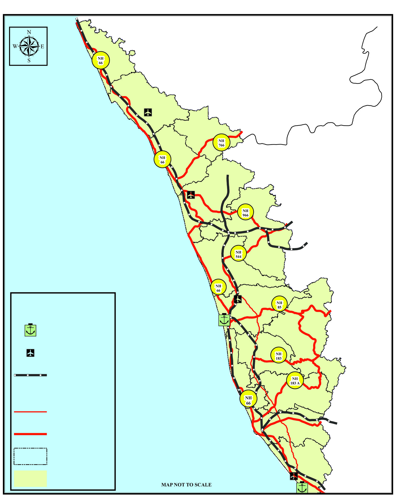
131
ഗതാഗത - ആശയവിനിമയസംവിധാനങ്ങൾ
ആധുുനിക സമൂഹത്തി
ത്തിന്റെ രൂൂപീകരണത്തിൽ ഗതാഗത-ആശയവിനിമയ സംവിധാനങ്ങൾ
പ്രധാന പങ്കുുവഹിക്കുുന്നുു. ആശയവിനിമയസാങ്കേതികവിദ്യയുടെ വേഗത്തിലുള്ള വളർച്ച
ലോ�ോകജനതയ്ക്ക് ഒന്ിച്ചുചേരാനുള്ള അവസരമാണ് ലഭ്യമാക്കുന്നത്. ഇത് ലോ�ോകത്തെ
ഒരുു ആഗോ�ോളഗ്രാഗ്രാമമാക്കുുന്നുു. സൗഹൃദപരമായ ഒത്തുചേ
രലിനുും മാനവികമൂല്്യങ്ങൾ
വളർത്തുന്ന
തിനുും സഹായകമായ രീതിയിൽ ഗതാഗത-ആശയവിനിമയ സംവിധാനങ്ങൾ
നമുക്ക്ക
്ക് ഉപയോ�ോഗിക്്കാാംാം.
സൂചിക
കേരളംം
ഗതാഗതഭൂൂപടം
തമിഴ്നാട്്
കർണ്ണാടകം
ലക്ഷദ്വീപ്കടൽ
കണ്ണൂൂർ അന്തർദേശീയ വിമാനത്താവളം
തിരുുവനന്തപുുരം
അന്തർദേശീയ
വിമാനത്താവളം
കൊ�ൊച്ി അന്തർദേശീയ
വിമാനത്താവളം
കോ�ോഴിക്ക
കോട്്
അന്തർദേശീയ വിമാനത്താവളം
വിഴിഞ്ഞം തുുറമുുഖം
കൊ�ൊച്ി
തുുറമുുഖം
തുറമുഖംം
വിമാനത്ാവളംം
റെയിൽവേ
ദേശീയപാത
എംംസി റോ�ോഡ്്
ജില്ാ അതിർത്ി
MAP NOT TO SCALE
Page 28
132
സാമൂഹ്്യശാസ്ത്രം ക്ാസ് V
1. ജലയാത്ര, വ്യോ�ോ�മയാത്ര എന്നിവ ടീച്ചറുുടെ സഹായത്തോ�ോടെ വെ�ർച്വവലാായി
സംഘടിപ്പിക്കുുക.
2. ഗതാഗതം മനുുഷ്യയജീവിതത്തിൽ വരുുത്തിയ മാറ്റങ്ങളെ�ക്കുുറിച്ച്്് സെ�മിനാർ
സംഘടിപ്പിക്കുുക.
3. ഗതാഗത-ആശയവിനിമയ രംഗങ്ങളിലെ� തൊ�ൊഴിൽ സാധ്യയതകളെ�ക്കുുറിച്ച്്്
അന്്വവേഷണം നടത്തിത്തി കുുറിപ്പ്് തയ്ാറാക്കുുക.
4. വിവിധതരം വാഹനങ്ങളുുടെെ മാതൃകകൾ നിർമ്മിച്ച്്് സ്കൂൂളിൽ പ്രദർശനം
സംഘടിപ്പിക്കുുക.
തുടർപ്രവർത്തനങ്ങൾ